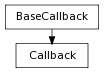

Enables deferred function evaluation with ‘baked’ arguments. Useful where lambdas won’t work...
It also ensures that the entire callback will be be represented by one undo entry.
Example:
pymel.core.windows.BaseCallback
pymel.core.windows.CallbackWithArgs
Enter search terms or a module, class or function name.